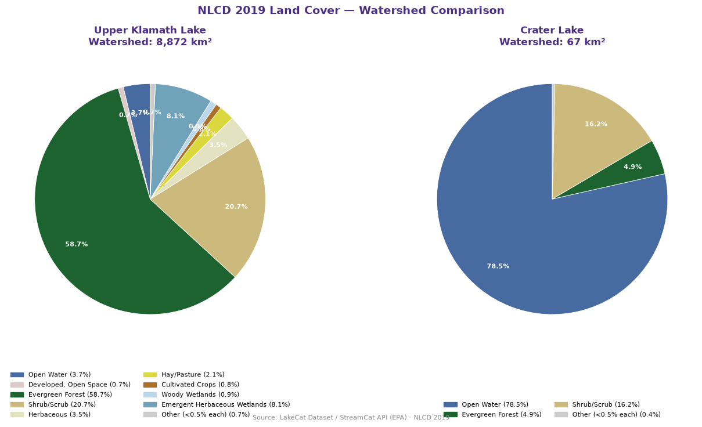

# [Python]
%pip install --quiet --upgrade duckdb geolibre🌊 LakeCat Watersheds + NLCD Land Cover — Upper Klamath Lake & Crater Lake, Oregon
What this notebook does
Everything runs in memory or via HTTP range requests — no files are downloaded or saved.The full stack is:
EPA S3 (GeoParquet, public)
↓ HTTP range requests — only matching row groups transfer
DuckDB (Python) — ST_AsGeoJSON(geometry) in the query
↓ returns GeoJSON geometry strings as a DataFrame
json.loads → GeoJSON FeatureCollection (in memory)
↓ m.add_geojson(geojson_str)
GeoLibre widget — full GIS app in the notebook cellWatersheds and LandUse Summary
| Upper Klamath Lake | Crater Lake | |
|---|---|---|
| COMID | 23794487 |
166257594 |
| HUC2 | 17 | 17 |
| HUC8 | 18010203 | 18010205 |
| Watershed area | ~9,760 km² (sprawling ag/rangeland basin) | ~53 km² (sealed volcanic caldera) |
| Hydrology | Major inflows: Williamson R., Wood R. | No inlets or outlets — rain + snow only |
| NLCD signature | Dominated by cropland, pasture, shrubland | Nearly 100% evergreen forest + water |
Swap in any valid NHDPlusV2 COMIDs and update HUC2 if they fall outside the PNW.
Install
Query StreamCat S3 with DuckDB
DuckDB’s httpfs extension streams only the Parquet row groups that satisfy the COMID filter.
The HUC2 Hive partition (HUC2=17/) means DuckDB touches exactly one file rather than globbing all 21 partitions.
Credentials are intentionally blank — the S3 bucket is fully public.
Why no
ST_GeomFromWKB()?
DuckDB’sspatialextension reads GeoParquet geometry columns as its nativeGEOMETRYtype automatically — not as rawBLOB/WKB bytes. Wrapping an already-decodedGEOMETRYinST_GeomFromWKB()causes aBinderExceptionbecause that function expectsBLOBinput. The fix is simplyST_AsGeoJSON(geometry)— one call, no cast needed.
# [Python]
import duckdb, json
import geopandas as gpd
import pandas as pd
# ── Lake COMIDs (NHDPlusV2 / LakeCat, HUC2=18) ───────────────────────────────
LAKES = {
120054054: {"name": "Upper Klamath Lake", "huc8": "18010203"},
24083377: {"name": "Crater Lake", "huc8": "18010205"},
}
HUC2 = "18"
S3_PATH = f"s3://dmap-data-commons-ow/data/streamcat/LakeCatWatersheds/HUC2={HUC2}/*.parquet"
COMID_LIST = ", ".join(str(c) for c in LAKES)
con = duckdb.connect()
con.execute("""
INSTALL httpfs; LOAD httpfs;
INSTALL spatial; LOAD spatial;
SET s3_region = 'us-east-1';
SET s3_use_ssl = true;
SET s3_url_style = 'path';
SET s3_access_key_id = '';
SET s3_secret_access_key = '';
SET s3_session_token = '';
SET enable_object_cache = true;
""")
# ── Step 1: DESCRIBE — see exactly what columns exist ────────────────────────
# From the schema we can see:
# COMID, GNIS_ID, GNIS_NAME, REACHCODE, HUC2, HUC4, geometry
# There is NO AreaSqKm column — that lives in the separate LakeCat tabular files.
schema = con.execute(f"""
DESCRIBE SELECT * FROM read_parquet('{S3_PATH}') LIMIT 0
""").df()
print("Available columns:")
print(schema[["column_name", "column_type"]].to_string(index=False))
print()
# ── Step 2: Query — return WKB bytes for GeoPandas ───────────────────────────
# We skip all DuckDB area functions: ST_Transform requires PROJ data files that
# are frequently missing in conda on Windows; ST_Area_Spheroid also fails in
# some builds. Instead, return raw WKB and let GeoPandas + PyProj handle area
# — PyProj ships its own bundled PROJ data so it works regardless of the
# system PROJ configuration.
sql = f"""
SELECT
COMID,
GNIS_NAME AS lake_name,
REACHCODE,
ST_AsWKB(geometry) AS geom_wkb
FROM read_parquet('{S3_PATH}')
WHERE CAST(COMID AS VARCHAR) IN ({', '.join(f"'{c}'" for c in LAKES)})
"""
raw = con.execute(sql).df()
con.close()
print(f"Rows from DuckDB : {len(raw)}")
print(f"geom_wkb dtype : {raw['geom_wkb'].dtype}")
print(f"geom_wkb type[0] : {type(raw['geom_wkb'].iloc[0]).__name__}")
print()
# ── Step 3: Build GeoDataFrame — convert bytearray → bytes for Shapely ───────
# DuckDB returns WKB as Python bytearray; Shapely's from_wkb expects bytes.
# .apply(bytes) does the conversion element-wise in one line.
gdf = gpd.GeoDataFrame(
raw.drop(columns=["geom_wkb"]),
geometry=gpd.GeoSeries.from_wkb(raw["geom_wkb"].apply(bytes)),
crs="EPSG:4326",
)
# ── Step 4: Project to EPSG:5070 and calculate watershed area ────────────────
# EPSG:5070 — US Albers Equal Area, course-standard for continental US area.
# GeoPandas uses PyProj which ships its own PROJ data — reliable on all platforms.
gdf_albers = gdf.to_crs("EPSG:5070")
gdf["ws_area_sqkm"] = (gdf_albers.geometry.area / 1e6).round(2)
# Add the friendly name from LAKES dict
gdf["name"] = gdf["COMID"].astype(int).map({k: v["name"] for k, v in LAKES.items()})
print(gdf[["COMID", "name", "lake_name", "ws_area_sqkm"]])
# alias so downstream cells still work
df = gdfAvailable columns:
column_name column_type
COMID VARCHAR
GNIS_ID VARCHAR
GNIS_NAME VARCHAR
REACHCODE VARCHAR
HUC2 BIGINT
HUC4 VARCHAR
__index_level_0__ BIGINT
bbox STRUCT(xmin DOUBLE, ymin DOUBLE, xmax DOUBLE, ymax DOUBLE)
geometry GEOMETRY('EPSG:4326')
Rows from DuckDB : 2
geom_wkb dtype : object
geom_wkb type[0] : bytearray
COMID name lake_name ws_area_sqkm
0 24083377 Crater Lake Crater Lake 67.35
1 120054054 Upper Klamath Lake 8872.43Assemble a GeoJSON FeatureCollection in memory
GeoLibre’s add_geojson() accepts a raw GeoJSON string, a dict, or a GeoPandas GeoDataFrame.
We build the FeatureCollection directly from DuckDB’s ST_AsGeoJSON() output — no GeoPandas needed.
# [Python]
import json as json_mod
features = [
{
"type": "Feature",
"properties": {
"COMID": int(str(row["COMID"])),
"name": row["name"],
"lake_name": row["lake_name"],
"ws_area_sqkm": float(row["ws_area_sqkm"]),
},
"geometry": row["geometry"].__geo_interface__,
}
for _, row in gdf.iterrows()
]
fc = {"type": "FeatureCollection", "features": features}
for f in features:
p = f["properties"]
print(f"{p['name']:30s} "
f"NHD name: {p['lake_name'] or 'n/a'} "
f"Watershed: {p['ws_area_sqkm']:,.1f} km²")Crater Lake NHD name: Crater Lake Watershed: 67.3 km²
Upper Klamath Lake NHD name: Watershed: 8,872.4 km²Fetch NLCD 2019 land cover metrics from the StreamCat/LakeCat API
The StreamCat API serves pre-computed watershed-scale NLCD proportions for every NHDPlusV2 lake - here we call it directly with urllib
# [Python]
import urllib.request, json
# ── StreamCat / LakeCat REST API — NLCD 2019 watershed metrics ───────────────
# Endpoint: https://api.epa.gov/StreamCat/lakes/metrics
#
# Key details from reading the pynhd source (nhdplus_derived.py):
# • JSON POST body (not form-encoded, not query params)
# • metric name = lowercase stem + year, e.g. "pctconif2019"
# • aoi = "ws" (not "watershed")
# • response = {"count": N, "items": [{comid, pctconif2019ws, ...}]}
# • column names = all lowercase, AOI suffix appended: "pctconif2019ws"
API_URL = "https://api.epa.gov/StreamCat/lakes/metrics"
COMID_STR = ",".join(str(c) for c in LAKES) # "120054054,24083377"
# 16 NLCD land cover stems — same list as lc_get_nlcd() in StreamCatTools R
NLCD_STEMS = [
"pctmxfst", "pctow", "pctshrb", "pcturbhi",
"pcturblo", "pcturbmd", "pcturbop", "pctwdwet",
"pctbl", "pctconif", "pctcrop", "pctdecid",
"pctgrs", "pcthay", "pcthbwet", "pctice",
]
YEAR = 2019
METRIC_STR = ",".join(f"{s}{YEAR}" for s in NLCD_STEMS)
# JSON body — this is what pynhd sends internally
payload = {
"comid": COMID_STR,
"name": METRIC_STR,
"aoi": "ws",
}
req = urllib.request.Request(
API_URL,
data = json.dumps(payload).encode(),
method = "POST",
headers = {
"Content-Type": "application/json",
"User-Agent": "GISPR-Course/1.0",
"Accept": "application/json",
},
)
with urllib.request.urlopen(req, timeout=30) as r:
response = json.loads(r.read())
api_data = response["items"]
print(f"Records returned : {len(api_data)}")
nlcd_by_comid = {int(row["comid"]): row for row in api_data}
# Show columns present (sanity check — should be 16+ NLCD Ws columns)
sample = api_data[0]
nlcd_cols = [k for k in sample if k not in ("comid", "catareasqkm", "wsareasqkm",
"catpctfull", "wspctfull")]
print(f"NLCD columns returned ({len(nlcd_cols)}):")
print(", ".join(nlcd_cols))Records returned : 2
NLCD columns returned (16):
pctbl2019ws, pctconif2019ws, pctcrop2019ws, pctdecid2019ws, pctgrs2019ws, pcthay2019ws, pcthbwet2019ws, pctice2019ws, pctmxfst2019ws, pctow2019ws, pctshrb2019ws, pcturbhi2019ws, pcturblo2019ws, pcturbmd2019ws, pcturbop2019ws, pctwdwet2019wsBuild the comparison chart
The nlcd_df DataFrame has one row per COMID and one column per NLCD class (e.g. PctConif2019Ws). We pivot to a {lake_name: {col: pct}} dict and build a compact HTML bar chart for the GeoLibre panel.
# [Python]
# ── Map API column names → labels and colors ──────────────────────────────────
# API returns lowercase with year and "ws" suffix: "pctconif2019ws"
NLCD_WS_COLS = {
f"pctow{YEAR}ws": ("Open Water", "#476BA0"),
f"pctice{YEAR}ws": ("Perennial Ice/Snow", "#D1DDF9"),
f"pcturbop{YEAR}ws": ("Developed, Open Space", "#DDC9C9"),
f"pcturblo{YEAR}ws": ("Developed, Low Intensity", "#D89382"),
f"pcturbmd{YEAR}ws": ("Developed, Med Intensity", "#BC4B12"),
f"pcturbhi{YEAR}ws": ("Developed, High Intensity", "#721000"),
f"pctbl{YEAR}ws": ("Barren Land", "#B2ADA3"),
f"pctdecid{YEAR}ws": ("Deciduous Forest", "#68AA63"),
f"pctconif{YEAR}ws": ("Evergreen Forest", "#1C6330"),
f"pctmxfst{YEAR}ws": ("Mixed Forest", "#B5C98E"),
f"pctshrb{YEAR}ws": ("Shrub/Scrub", "#CCBA7C"),
f"pctgrs{YEAR}ws": ("Herbaceous", "#E2E2C1"),
f"pcthay{YEAR}ws": ("Hay/Pasture", "#DBD83D"),
f"pctcrop{YEAR}ws": ("Cultivated Crops", "#AA7028"),
f"pctwdwet{YEAR}ws": ("Woody Wetlands", "#BAD8EA"),
f"pcthbwet{YEAR}ws": ("Emergent Herbaceous Wetlands", "#70A3BA"),
}
# ── Build lc_results: {lake_name: {col: pct}} ────────────────────────────────
available_cols = [c for c in NLCD_WS_COLS if c in api_data[0]]
lc_results = {}
for comid, meta in LAKES.items():
name = meta["name"]
row = nlcd_by_comid.get(comid, {})
metrics = {col: float(row[col]) for col in available_cols if row.get(col) is not None}
lc_results[name] = metrics
print(f"\n{name} (COMID {comid})")
for col, pct in sorted(metrics.items(), key=lambda x: -x[1])[:6]:
print(f" {NLCD_WS_COLS[col][0]:35s} {pct:5.1f}%")
def build_lc_chart_html(lc_results):
"""Horizontal bar chart comparing NLCD watershed land cover for both lakes."""
lake_names = list(lc_results.keys())
bar_colors = ["#4b2e83", "#b7a57a"] # UW Purple, UW Gold
all_cols = sorted(
set(col for vals in lc_results.values() for col in vals),
key=lambda c: -max(v.get(c, 0) for v in lc_results.values())
)[:12]
rows = ""
for col in all_cols:
label = NLCD_WS_COLS.get(col, (col, "#ccc"))[0]
rows += (
f"<tr><td style='padding:2px 8px;font-size:11px;white-space:nowrap'>"
f"{label}</td>"
)
for i, name in enumerate(lake_names):
pct = lc_results[name].get(col, 0)
rows += (
f"<td style='padding:2px 4px;width:130px'>"
f"<div style='background:{bar_colors[i]};width:{min(pct*1.5,100):.0f}%;"
f"height:12px;border-radius:2px'></div></td>"
f"<td style='padding:2px 4px;font-size:10px;color:#555'>{pct:.1f}%</td>"
)
rows += "</tr>"
legend = "".join(
f"<span style='display:inline-block;width:12px;height:12px;background:{bar_colors[i]};"
f"margin-right:4px;border-radius:2px'></span>"
f"<span style='font-size:11px;margin-right:12px'>{name.split()[0]}</span>"
for i, name in enumerate(lake_names)
)
return f"""
<div style='font-family:sans-serif;background:#fff;padding:10px;border-radius:6px;
box-shadow:0 1px 4px rgba(0,0,0,.15);max-width:480px'>
<div style='font-weight:bold;font-size:13px;margin-bottom:6px'>
NLCD {YEAR} Land Cover — Watershed Comparison</div>
<div style='margin-bottom:8px'>{legend}</div>
<table style='border-collapse:collapse;width:100%'>
<thead><tr>
<th style='text-align:left;font-size:11px;padding:2px 8px'>Class</th>
{"".join(
f"<th colspan='2' style='text-align:left;font-size:11px;color:{bar_colors[i]}'>"
f"{n.split()[0]} %</th>"
for i, n in enumerate(lake_names)
)}
</tr></thead>
<tbody>{rows}</tbody>
</table>
<div style='font-size:9px;color:#999;margin-top:6px'>
Source: LakeCat / StreamCat API (EPA) · NLCD {YEAR}</div>
</div>
"""
chart_html = build_lc_chart_html(lc_results)
print("\nChart built.")
Upper Klamath Lake (COMID 120054054)
Evergreen Forest 58.7%
Shrub/Scrub 20.7%
Emergent Herbaceous Wetlands 8.1%
Open Water 3.7%
Herbaceous 3.5%
Hay/Pasture 2.1%
Crater Lake (COMID 24083377)
Open Water 78.5%
Shrub/Scrub 16.2%
Evergreen Forest 4.9%
Herbaceous 0.1%
Developed, Med Intensity 0.1%
Developed, Low Intensity 0.1%
Chart built.Visualize in GeoLibre with Pie Chart
Two outputs: 1. GeoLibre map widget — watershed polygons with an NLCD land cover legend via add_legend() (only classes with >1% coverage) 2. Matplotlib pie chart — one pie per lake, with the watershed area in the title and a threshold-grouped legend
# [Python]
from geolibre import Map
# ── Verify fc is a FeatureCollection dict ─────────────────────────────────────
assert isinstance(fc, dict) and fc.get("type") == "FeatureCollection", (
"fc must be a FeatureCollection dict — re-run the geojson cell above"
)
print(f"fc ready: {len(fc['features'])} feature(s)")
# ── Map ───────────────────────────────────────────────────────────────────────
m = Map(center=(-121.9, 42.6), zoom=8)
# Watershed polygons
m.add_geojson(fc, name="LakeCat Watersheds")
# Named basemaps available in GeoLibre: liberty, bright, positron, dark, fiord
# There is no 'satellite' named basemap — satellite imagery requires add_tile_layer()
# with an XYZ URL (see Section 5 below).
m.add_basemap("positron") # clean light background, good contrast with watershed fill
mfc ready: 2 feature(s)# [Python]
import matplotlib.pyplot as plt
import matplotlib.patches as mpatches
# ── Pie charts — NLCD 2019 watershed land cover, one per lake ────────────────
# lc_results and NLCD_WS_COLS are built in the cell above.
# We threshold at 0.5% so tiny slivers don't clutter the chart.
THRESHOLD = 0.5 # percent — classes below this are grouped into 'Other'
lake_names = list(lc_results.keys())
fig, axes = plt.subplots(1, len(lake_names), figsize=(7 * len(lake_names), 7))
if len(lake_names) == 1:
axes = [axes]
for ax, name in zip(axes, lake_names):
metrics = lc_results[name]
# Separate above-threshold classes from 'Other'
above = {col: pct for col, pct in metrics.items() if pct >= THRESHOLD}
other = sum(pct for pct in metrics.values() if pct < THRESHOLD)
labels = [NLCD_WS_COLS[col][0] for col in above]
sizes = list(above.values())
colors = [NLCD_WS_COLS[col][1] for col in above]
if other > 0:
labels.append(f"Other (<{THRESHOLD}% each)")
sizes.append(other)
colors.append("#cccccc")
wedges, texts, autotexts = ax.pie(
sizes,
labels=None, # labels go in the legend, not on wedges
colors=colors,
autopct=lambda p: f"{p:.1f}%" if p >= THRESHOLD else "",
pctdistance=0.75,
startangle=90,
wedgeprops={"linewidth": 0.6, "edgecolor": "white"},
)
for at in autotexts:
at.set_fontsize(8)
at.set_color("white")
at.set_fontweight("bold")
# Legend outside the pie
legend_patches = [
mpatches.Patch(color=c, label=f"{l} ({s:.1f}%)")
for l, s, c in zip(labels, sizes, colors)
]
ax.legend(
handles=legend_patches,
loc="lower center",
bbox_to_anchor=(0.5, -0.28),
ncol=2,
fontsize=8,
frameon=False,
)
comid = next(c for c, m in LAKES.items() if m["name"] == name)
ws_km2 = lc_results[name] # pcts sum ~100
ws_area = gdf.loc[gdf["COMID"].astype(str) == str(comid), "ws_area_sqkm"].values
area_str = f"{ws_area[0]:,.0f} km²" if len(ws_area) else ""
ax.set_title(
f"{name}\nWatershed: {area_str}",
fontsize=12, fontweight="bold",
color="#4b2e83", # UW Purple
pad=12,
)
fig.suptitle(
"NLCD 2019 Land Cover — Watershed Comparison",
fontsize=14, fontweight="bold", color="#4b2e83", y=1.01,
)
plt.figtext(
0.5, -0.01,
"Source: LakeCat Dataset / StreamCat API (EPA) · NLCD 2019",
ha="center", fontsize=8, color="#888888",
)
plt.tight_layout()
plt.show()
GeoLibre quick tips - Click a polygon → Identify shows
COMIDand any other attributes - Bottom-left table icon → Attribute Table with filter, sort, export - SQL Workspace (Ctrl+Shift+D) → query the live layer with DuckDB Spatial SQL - Project → Share → upload toshare.geolibre.appfor a static shareable link
🔧 Try it yourself
Change
COMIDSto any NHDPlusV2 IDs you find in the NHD Mapper and re-run cells 1–3Change
HUC2to"01"(New England) and pick COMIDs from that region — notice DuckDB only touches that one partition fileAdd more attributes to the
SELECTin cell 1 (e.g.WsAreaSqKm,PctCrop2019Ws) to enrich the Identify panelIn the GeoLibre SQL Workspace, run:
SELECT COMID, ST_Area(geometry) AS area_deg2 FROM "LakeCat Watersheds HUC2-17" ORDER BY area_deg2 DESC
R equivalent (StreamCatTools)
# install.packages("StreamCatTools") # if needed
library(StreamCatTools)
# Same two features, same HUC2-restricted S3 query
ws <- rbind(
lc_get_watershed(comid = 23794487, huc2 = "17"),
lc_get_watershed(comid = 166257594, huc2 = "17")
)
plot(sf::st_geometry(ws))